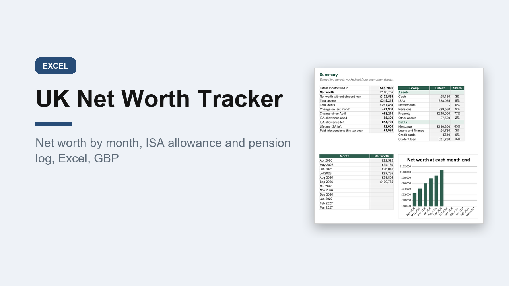

UK Net Worth Tracker 2026/27, Excel, ISA Allowance and Pension Log, GBP
GBP 7.00 · instant digital download

See everything you own and owe in one place, month by month, set up for the UK: pounds, A4, UK spelling and the 6 April 2026 to 5 April 2027 tax year.
What you get: one editable Excel workbook (.xlsx) with 8 sheets.
1.
Start here: plain instructions.
2.
Summary: net worth now, with and without the student loan, total assets and debts, the change on last month and since April, ISA allowance used and left, pension paid in this tax year, a breakdown by group and a chart of net worth at each month end.
3.
Accounts: up to 30 accounts, with UK types in a dropdown such as current account, easy access and fixed rate savings, Premium Bonds, Cash ISA, Stocks and Shares ISA, Lifetime ISA, workplace pension, SIPP, property, mortgage, credit card, car finance and student loan.
4.
Monthly Balances: April 2026 to March 2027, one column a month.
5.
ISA Allowance: log payments in and see what is left of the 20,000 pound allowance and the 4,000 pound Lifetime ISA limit.
6.
Pension: employee, employer, salary sacrifice and tax relief totals for the tax year.
7.
Goals: up to 10 goals with progress and the monthly amount needed.
8.
Lists: the account types behind the dropdowns.
A worked example is filled in.
Record keeping only, not financial advice.
Opens in Excel, Google Sheets and Numbers.
Digital download..
What happens after you buy
Payment and delivery are handled by Gumroad. You get the download straight after paying, and a copy of the link by email. Nothing is posted to you.
Tags: net worth tracker, uk finance, isa tracker, pension tracker, excel template, savings tracker, wealth tracker, money tracker, personal finance, spreadsheet uk